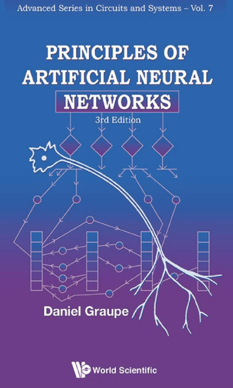

| ZotWeb | book | |
| Src Url | [[Graupe]] (2013) | |
undefined

Graupe, Ph.D
Citer: (Graupe, 2013)
FTag: Graupe-2013
APA7: Graupe, D. (2013). Principles of artificial neural networks (3rd edition). World Scientific.
University of Illinois, Chicago, USA
Introduction and Role of Artificial Neural Networks
he Perceptron’s Input-Output Princi
n Learning Proce
Predicting Price Movement in Market Microstructure viaLAMSTAR
he cognitron network employs both inhibitory and excitory neurons in its various layers
Cognition is a network designed mainly with recognition of patterns in mind.
#cognitron